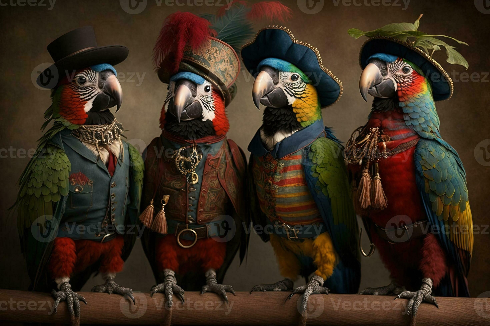

| 🦜 |
Crazy Birds |
Some text about birds"I believe I can fly" - a bird Originally, these same birds were wild birds that lived and died in the wild. It wasn’t until people realized their importance and usefulness that they were captured, raised in captivity and bred in farms. Because domesticated birds are practically a different species than their wild counterparts, domesticated birds and wild birds might share physical appearance, but differ in other ways.
Source: zoopetdia Special thanks to Peter Leicht for pointing me in the right directions. |
 |